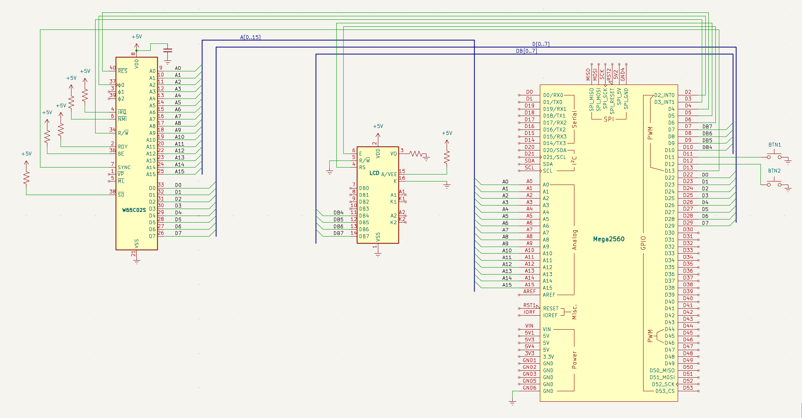

Eget 6502-program
Mål
Datorn är nu komplett — CPU, minne, LCD, knappar. Men den kör bara NOP:ar. Dags att skriva vårt första egna 6502-program!
Vi skriver en enkel räknare: öka X-registret från 0 till 255, spara värdet på adress $0200, och loopa. Programmet är bara 9 bytes stort — men det innehåller allt ett riktigt program behöver: initiering, beräkning, minnesskrivning och loop.
6502-program skrivs i maskinkod — varje instruktion är 1–3 bytes. LDX #$00 är två bytes ($A2 $00), INX är en byte ($E8), STX $0200 är tre bytes ($8E $00 $02). Vi skriver in dessa bytes direkt i Arduinons minnesarray, och CPU:n exekverar dem som ett riktigt program.
Ingen ny hårdvara — samma koppling som steg 5. Allt nytt finns i mjukvaran.
Kopplingar
Samma fysiska koppling som steg 5 — ingenting har flyttats. Tabellen är med för fullständighet så att du kan följa varje signal, men det enda som ändras i detta steg är programmet i setup().
| Pin | Signal | Kopplas till | Varför |
|---|---|---|---|
| 8 | VDD | +5V | Strömmatning — CPU:ns driftspänning |
| 21 | VSS | GND | Systemjord — sluten krets |
| 37 | PHI2 | Arduino D2 | Klockingång — Arduino skickar fyrkantsvåg |
| 2 | RDY | +5V via 10kΩ | Ready — HÖG = CPU får köra |
| 4 | /IRQ | +5V via 10kΩ | Interrupt request — HÖG = inget avbrott |
| 6 | /NMI | +5V via 10kΩ | Non-maskable interrupt — måste vara HÖG |
| 36 | BE | +5V via 10kΩ | Bus Enable — HÖG = bussarna aktiva |
| 38 | /SO | +5V via 10kΩ | Set Overflow — avaktiverad |
| 40 | /RESET | Arduino D4 | Kontrollerad reset |
| 9–16 | A0–A7 | Arduino A0–A7 | Låga adressbyte — läses via PORTF |
| 17–20, 22–25 | A8–A15 | Arduino A8–A15 | Höga adressbyte — läses via PORTK |
| 34 | R/W | Arduino D3 | HÖG = CPU läser, LÅG = CPU skriver |
| 33 | D0 | Arduino D22 via 100Ω | Databit 0 (LSB) |
| 32 | D1 | Arduino D23 via 100Ω | Databit 1 |
| 31 | D2 | Arduino D24 via 100Ω | Databit 2 |
| 30 | D3 | Arduino D25 via 100Ω | Databit 3 |
| 29 | D4 | Arduino D26 via 100Ω | Databit 4 |
| 28 | D5 | Arduino D27 via 100Ω | Databit 5 |
| 27 | D6 | Arduino D28 via 100Ω | Databit 6 |
| 26 | D7 | Arduino D29 via 100Ω | Databit 7 (MSB) |
| 7 | SYNC | Arduino D13 | HÖG = CPU:n hämtar ny opcode |
| LCD 16×2 (parallell 4-bit) | |||
| 1 | VSS | GND | Jord |
| 2 | VDD | +5V | Strömmatning |
| 3 | VO | Potentiometer mittben | Kontrast — sidoben till +5V och GND |
| 4 | RS | Arduino D5 | Register Select — 0 = kommando, 1 = data |
| 5 | R/W | GND | Alltid skrivläge |
| 6 | E | Arduino D6 | Enable — Arduino pulserar för att skicka data |
| 11 | DB4 | Arduino D10 | Data bit 4 — omvänd ordning! |
| 12 | DB5 | Arduino D9 | Data bit 5 |
| 13 | DB6 | Arduino D8 | Data bit 6 |
| 14 | DB7 | Arduino D7 | Data bit 7 |
| 15 | A | +5V via 220Ω | Bakgrundsbelysning + |
| 16 | K | GND | Bakgrundsbelysning − |
6502-programmet — räknare
Här är programmet som processorn ska köra. Varje rad är en instruktion i 6502:ans språk — maskinkod som CPU:n förstår direkt.
| Adress | Bytes | Assembler | Vad händer |
|---|---|---|---|
| $8000 | A2 00 | LDX #$00 | X = 0 — nollställ räknaren (körs bara en gång) |
| $8002 | E8 | INX | X = X + 1 — öka räknaren |
| $8003 | 8E 00 02 | STX $0200 | Spara X-värdet till minnesadress $0200 |
| $8006 | 4C 02 80 | JMP $8002 | Hoppa tillbaka till INX — oändlig loop |
Kopplingsschema
Samma hårdvara som steg 5. LCD:n kopplas direkt till Arduino — RS→D5, E→D6, DB4–DB7→D10,D9,D8,D7 (omvänd ordning).

Minneskarta ($0000–$FFFF)
6502-processorns 64 KB adressrymd, uppdelad i fyra områden:
- Lila (
$FFFA–$FFFF): vektorer — processorn läser här efter reset för att veta var programmet börjar - Blå (
$8000–$87FF): vårt 6502-program — 9 bytes maskinkod som Arduino laddar in frånsetup() - Grön (
$0000–$03FF): arbetsminne — zero page ($0000–$00FF, snabbast åtkomst), stack ($0100–$01FF,JSR/RTS/PHA/PLA), och ledigt RAM ($0200–$03FF). Här kan CPU:n läsa och skriva fritt - Grå: oanvänt — Arduino returnerar
$EA(NOP) så CPU:n hoppar bara vidare
Blockens höjd är proportionell mot deras storlek.
0xEA = NOP — ofarlig fallback. CPU:n hoppar över oanvända adresser.
Arduino-kod
Datorn fungerar — men den har hittills bara kört NOP:ar. Nu skriver vi vårt första egna 6502-program. Det är bara 9 bytes stort, men det innehåller allt ett riktigt program behöver: initiering, beräkning, minnesskrivning och en loop. CPU:n kommer att räkna från 0 till 255 i en oändlig loop — och du kommer att kunna följa varje steg.
6502-maskinkod — så här ser ett program ut
En 6502-instruktion är 1–3 bytes lång. Första byten är alltid opcode — en siffra som talar om för CPU:n vad den ska göra. Resten är operander — data eller adresser som instruktionen behöver. Vårt program har fyra instruktioner:
| Instruktion | Bytes | Vad CPU:n gör |
|---|---|---|
| LDX #$00 | A2 00 | Ladda X-registret med 0. X är vår räknare. # betyder "omedelbart värde" — använd siffran 0, inte en minnesadress. Den här instruktionen körs bara en gång. |
| INX | E8 | Öka X med 1. En enda byte, ingen operand. Det här är loopens startpunkt — hit hoppar vi tillbaka. |
| STX $0200 | 8E 00 02 | Spara X-registrets värde till minnesadress $0200. Notera: låg byte ($00) kommer före hög byte ($02). 6502 är little-endian. |
| JMP $8002 | 4C 02 80 | Hoppa tillbaka till INX. Återigen: låg byte först ($02), hög byte sen ($80). Utan denna instruktion skulle CPU:n bara fortsätta rakt fram genom minnet. |
Arduino-koden — bara setup() ändras
pulse(), loop() och LCD-koden är helt oförändrade från steg 5. Det enda som ändras är programladdningen i setup(). Istället för en enda write_mem(0x8000, 0xEA) skriver vi nu 9 bytes — en i taget, på stigande adresser från $8000. Varje write_mem() placerar en byte i Arduinons program[]-array, och CPU:n kommer att läsa dem som instruktioner.
Vad du ser på LCD:n
När programmet körs kan du med Knapp 2 (instruktionssteg) följa programflödet: $8000 (LDX) → $8002 (INX) → $8003 (STX) → $8006 (JMP) → $8002 (INX igen). Varje varv genom loopen ökar värdet på adress $0200 — och du kan se det på LCD:ns rad 1 som D:$01, D:$02, D:$03… hela vägen upp till D:$FF (255). Sedan wrappar X-registret till 0 och loopen börjar om.
// ==============================================================
// Steg 6 — Första egna 6502-programmet (räknare)
// ==============================================================
// CPU:n kör ett riktigt maskinkodsprogram på 9 bytes:
// LDX #$00 · INX · STX $0200 · JMP $8002
// X-registret räknar 0→255 i oändlig loop. LCD:n visar
// adress och instruktion i realtid.
#include <Arduino.h>
#include <LiquidCrystal.h>
// --- Pindefinitioner ---
#define PHI2 2
#define RESB 4
#define RWB 3
#define SYNC 13
#define BTN_CLK 11
#define BTN_INSTR 12
#define CLOCK_HZ 500 // Klockfrekvens i Hz
#define CLOCK_DELAY (1000 / (CLOCK_HZ * 2)) // ms per klockfas
// --- LCD-konfiguration ---
LiquidCrystal lcd(5, 6, 10, 9, 8, 7);
// --- Minnesarrayer ---
uint8_t ram[1024]; // $0000–$03FF
uint8_t vectors[6]; // $FFFA–$FFFF
// --- read_mem() — slå upp minnesvärde ---
uint8_t read_mem(uint16_t addr) {
if (addr >= 0xFFFA && addr <= 0xFFFF) return vectors[addr - 0xFFFA];
if (addr < 1024) return ram[addr];
return 0xEA;
}
// --- write_mem() — spara minnesvärde ---
void write_mem(uint16_t addr, uint8_t val) {
if (addr >= 0xFFFA && addr <= 0xFFFF)
{ vectors[addr - 0xFFFA] = val; return; }
if (addr < 1024) ram[addr] = val;
}
// --- pulse() — en klockcykel + LCD-uppdatering ---
void pulse() {
digitalWrite(PHI2, LOW);
delay(CLOCK_DELAY);
uint16_t a = (PINK << 0) | (PINF << 8);
bool rw = digitalRead(RWB);
uint8_t data = 0;
if (rw) { DDRA = 0xFF; PORTA = read_mem(a); data = PORTA; }
else { DDRA = 0x00; }
digitalWrite(PHI2, HIGH);
delay(CLOCK_DELAY);
if (!rw) { data = PINA; write_mem(a, data); }
// LCD-uppdatering
lcd.setCursor(0, 0);
lcd.print("A:$"); lcd.print(a, HEX);
if (a < 0x1000) lcd.print(" ");
if (a < 0x100) lcd.print(" ");
lcd.print(" ");
lcd.setCursor(0, 1);
lcd.print("D:$");
if (data < 0x10) lcd.print("0");
lcd.print(data, HEX);
lcd.print(" ");
}
// --- setup() — ladda räknarprogrammet ---
void setup() {
Serial.begin(115200);
pinMode(PHI2, OUTPUT);
pinMode(RESB, OUTPUT);
pinMode(RWB, INPUT);
pinMode(SYNC, INPUT);
pinMode(BTN_CLK, INPUT_PULLUP);
pinMode(BTN_INSTR, INPUT_PULLUP);
DDRK = 0x00; DDRF = 0x00; DDRA = 0x00;
lcd.begin(16, 2);
lcd.print("Steg 6 Raknare");
// --- Ladda räknarprogrammet ---
// Reset-vektor → $8000
write_mem(0xFFFC, 0x00);
write_mem(0xFFFD, 0x80);
// LDX #$00 — ladda X-registret med 0 (körs bara en gång)
write_mem(0x8000, 0xA2);
write_mem(0x8001, 0x00);
// INX — öka X med 1 (loop-start, 1 byte)
write_mem(0x8002, 0xE8);
// STX $0200 — spara X till minnesadress $0200 (3 bytes)
write_mem(0x8003, 0x8E);
write_mem(0x8004, 0x00); // Låg byte av $0200
write_mem(0x8005, 0x02); // Hög byte av $0200
// JMP $8002 — hoppa tillbaka till INX (3 bytes)
write_mem(0x8006, 0x4C);
write_mem(0x8007, 0x02); // Låg byte av $8002
write_mem(0x8008, 0x80); // Hög byte av $8002
Serial.println("Steg 6 — Räknarprogram");
Serial.println("Program: LDX #$00 · INX · STX $0200 · JMP $8002");
// Reset-sekvens
digitalWrite(RESB, LOW);
for (int i = 0; i < 5; i++) pulse();
digitalWrite(RESB, HIGH);
}
// --- loop() — knappstyrning ---
void loop() {
if (!digitalRead(BTN_CLK)) {
delay(50); while (!digitalRead(BTN_CLK)); delay(50);
pulse();
}
if (!digitalRead(BTN_INSTR)) {
delay(50); while (!digitalRead(BTN_INSTR)); delay(50);
do { pulse(); } while (!digitalRead(SYNC));
}
}
Exempel på körning
När du laddat upp koden och trycker på Knapp 2 (instruktionssteg) ser du programmet rulla genom adresserna — både i seriemonitor och på LCD-displayen:
Seriemonitor — efter ett varv i loopen
Steg 6 — Räknarprogram Program: LDX #$00 · INX · STX $0200 · JMP $8002 R $FFFC R $FFFD R $8000 R $8001 R $8002 R $8003 R $8004 R $8005 W $0200 R $8006 R $8007 R $8008 R $8002 ← tillbaka till INX ...
LCD-displayen — mitt i loopen
Adress $0200 håller räknarens värde. Efter 5 varv genom loopen visar D:$05.
För första gången ser du ett W i loggen! CPU:n skriver till adress $0200 — det är STX $0200 som sparar X-registrets värde. På LCD:ns rad 1 ser du D:$01, D:$02, D:$03… räknaren ökar för varje varv. När den når D:$FF (255) wrappar den till D:$00 — X-registret är bara 8 bitar brett.
Programmet är ynka 9 bytes, men det innehåller redan alla mönster du behöver för att skriva större program: initiering (LDX), beräkning (INX), lagring (STX) och kontrollflöde (JMP). Du har just skrivit ditt första 6502-program!
Om det inte fungerar
Här är några saker att kontrollera:
- CPU:n kör
NOPistället? Du har glömt att ladda det nya programmet. Kontrollerawrite_mem()-anropen isetup(). - CPU:n hoppar till fel adress?
JMP-adressen är fel.$8002är$02 $80(låg byte först!). - Programmet stannar? Du kanske har en
BRK-instruktion (0x00) någonstans. Dubbelkolla att alla bytes är korrekta.